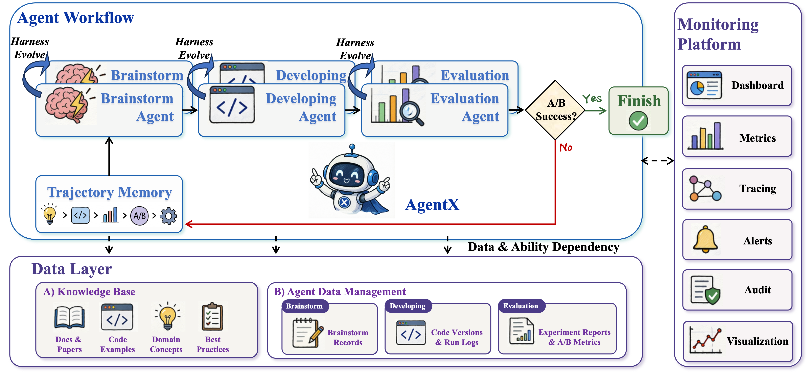
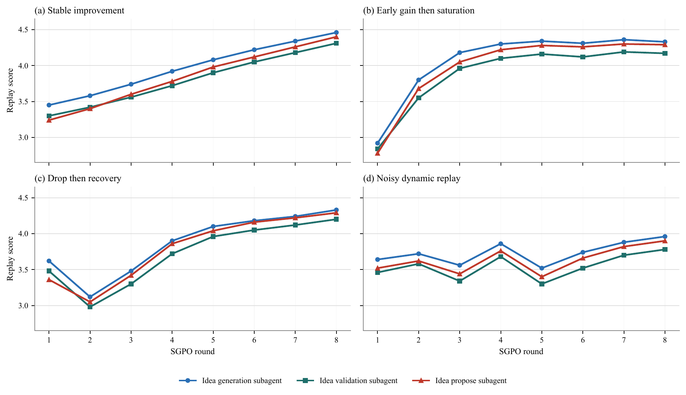
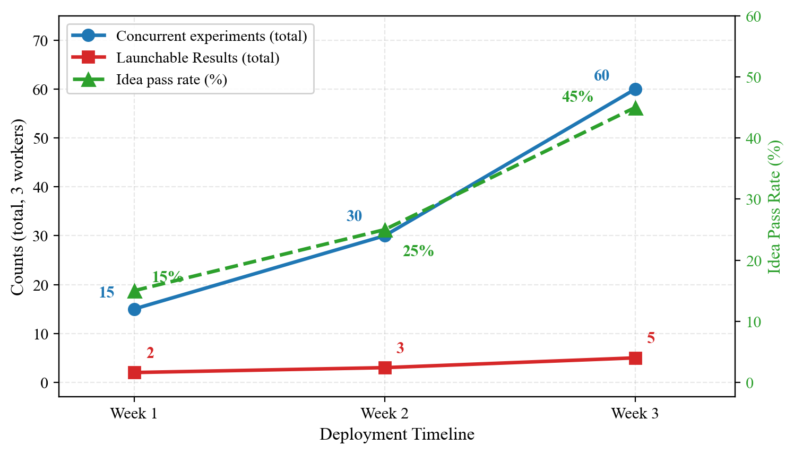

工程师执行每一步
想法、实现、部署和复盘彼此等待，吞吐受单人认知与工时约束。
AgentX: Towards Agent-Driven Self-Iteration of Industrial Recommender SystemsChangxin Lao 等 62 位作者 · Kuaishou · arXiv v2，2026-06-26
AgentX 的中心命题是：当提出想法、改生产代码、上线 A/B、读结果和沉淀经验都能成为可追踪的机器流程，推荐研发的上限便不再线性绑定工程师人数，而转向 Agent 能力、实验资源和治理质量。
传统工业推荐迭代横跨数据分析、特征与模型开发、部署、A/B 测试和归因复盘，周期以周计算。最稀缺的本应是高质量假设与失败解释，但工程师时间大量消耗在拉数、改配置、维护流水线和人工交接上。扩团队或增强底层平台，只是在同一串行流程上增加劳动力，并没有改变每个实验都必须由人贯穿的结构。
已有 LLM AutoML 从预定义流水线自动化，发展到能改代码、跑实验的 ML Engineering Agent，再到提出和验证研究问题的 Research Agent。然而工业推荐还有三道门槛：最终奖励来自延迟且受护栏约束的真实线上 A/B；生产系统包含十亿级样本、多目标与多业务线；单次任务结束后，系统还必须把执行轨迹变成下一次可复用的能力。
去掉论文品牌后，控制边界发生了三次移动。每次移动都会释放一种规模效应，同时把瓶颈推到下一层。
想法、实现、部署和复盘彼此等待，吞吐受单人认知与工时约束。
不同 Worker 让多个想法同时处在提案、编码、上线和监控阶段。
成功与失败不只更新业务策略，还改变 Agent 的约束、输出契约和工具纪律。
AgentX 将一次工业实验拆成 Brainstorm、Developing、Evaluation 与 Harness Evolution。每一段都用确定性检查、知识库或人工门控收窄 LLM 的自由度。
Brainstorm Agent 不追求生成最多创意，而是把模糊业务意图压缩为少量可执行提案。它从历史 Experiment KB、系统结构与代码边界、实时数据分析和论文研究四类证据取材，并把候选分为 Ready-to-implement、Probe-first 和 Moonshot-backlog。被拒方向进入 avoid set，下一轮搜索剩余空间，避免反复改写同一想法。
Developing Agent 有在线策略和离线模型两条轨道。在线轨道用 schema 查询、DSL 检查、C++ 静态检查、默认关闭的 feature flag 与 dryrun 防止“代码能编译但语义错误”。离线轨道要求先声明因果机制与可观测量，再由确定性程序从训练日志抽取 AUC；即便指标上涨，只要因果链无法验证，也被标记为刹车信号，不写入成功知识。
Evaluation Agent 则把线上 A/B 当作权威奖励。它负责流量桶分配、灰度、统计方法选择与业务域护栏，并输出 KEEP、EXTEND 或 DISCARD。负结果会按阶段、目标、用户/内容分群与失败原因资产化，成为下一轮提案的禁区或待验证区域。这里最重要的设计不是自动读数，而是把“未上线”和“失败上线”都变成可查询的决策记忆。

Brainstorm、Developing 与 Evaluation 把一个想法送到真实 A/B；Trajectory Memory 收集全程证据；数据层保存论文、代码样例、领域知识与实验记录；监控平台提供指标、追踪、告警与审计。
阅读要点：A/B 成功不是唯一输出。失败路径返回 Trajectory Memory，随后既可约束业务搜索，也可用来修改子 Agent 的 Harness。系统的“复利”依赖这条回路是否能可靠区分环境失败、实现失败与假设失败。
四段闭环对应四种不同的失败，它们不能用同一个大模型自评解决。AgentX 的系统贡献恰恰在于按失败类型安排不同证据和准入门。
用任务合同、系统知识、数据分析、历史实验与人工短名单约束，不让不成熟方向直接进入编码。
属性、DSL、代码差异、指标抽取和平台故障尽量交给确定性工具，LLM 只负责需要判断的部分。
线上 A/B、业务域护栏和例外审查共同决定是否保留，不以离线分数或 Agent 自信替代。
把轨迹诊断成语义梯度，通过成对重放更新单个子 Agent 的规则，而非一次性重写整个系统。
AgentX 对 Harness 的定义非常保守：每次只修改一个子 Agent 的指令、校验规则、输出契约或工具纪律，其他模型、工具和总编排保持冻结。
SGPO-I 从会话轨迹抽取任务约束与失败诊断，把“缺少需求、步骤顺序错误、证据不足、交接合同破裂”等自然语言损失写成语义梯度，再生成局部 Harness 候选。新旧 Harness 在相同重放任务与相同量表下对比，只有分数提升且不破坏安全边界才接受。一次 Brainstorm 子 Agent 的五轮演化中，归一化重放分数从 75.15% 升至 98.00%，接受的修改包括任务合同显式化、证据索引、候选质量 schema、拒绝原因记录与可评估交接。
SGPO-II 面向长程编码，把证据源换成历史已合并的代码变更。系统隐藏落地 patch，让 Developing Agent 从需求重新实现，再按语义正确性、需求覆盖、文件覆盖、默认安全与代码风格评分。论文案例中，一个异步多文件模块从 2.60 提升到 4.90；同时也保留了 3.67 降至 1.80 的回归案例，说明 Judge 会误诊，可靠性来自成对重放的拒绝门，而不是评估器永不出错。
论文还把“如何研究”与“研究什么”分成两条进化轴。SGPO 修改 Agent 的工作方式；模型研究漏斗则持续改变搜索空间：先复现论文，再做模块消融，最后跨论文组合。失败若推翻论文核心前提，会剪掉整条分支；经至少两次独立运行与对抗审查确认的经验，才进入 playbook 或 anti-pattern。

不同子 Agent 会出现持续增长、提前饱和、短期回退和噪声恢复。每轮都会重采轨迹并生成新量表，因此候选分数波动是系统属性。
谨慎解读：图证明“候选演化路径有噪声”，也说明门控必要；它不证明接受后的生产 Harness 在未来分布上必然单调变好，因为重放任务仍来自历史轨迹池。
三周部署证明 AgentX 能把大量提案送过实现与上线；更值得注意的是漏斗在哪里收缩：代码并不是主要障碍，只有 9.9% 的已上线实验成为正向 Launchable Result。
生产研究由 3 个 AgentX Worker 在快手主 Feed 与生活服务两条业务线上并发运行。374 个想法中，106 个通过提案审核，100 个完成编码与上线，最终 10 个达到可全量发布的 LR。主 Feed 贡献 8 个，生活服务贡献 2 个。论文将结果统一记录在追加式事件日志中，以固定快照计算相邻转化率。
| 业务场景 | Ideas | Idea Pass | Code & Launch | Positive Eval. | LR |
|---|---|---|---|---|---|
| Main Feed | 361 | 27.7% | 95.0% | 8.4% | 8 |
| Life Service | 13 | 46.1% | 83.3% | 40.0% | 2 |
| Overall | 374 | 28.34% | 94.3% | 9.9% | 10 |
来源：论文 Table 4 与 Eq. 10。总体链路为 374 → 106 → 100 → 10，端到端约 2.67%。
拒绝原因揭示了系统真正的稀缺资源：268 个提案失败中，64.7% 是 A/B 参数资源冲突，14.5% 是用户或物品属性未暴露，平台与基础设施约束合计占 91.4%。编码阶段的剩余失败也多集中在 DSL、C++/MaTX 与分支结构约束。作者据此判断，下一项高杠杆工作不是让模型更聪明，而是在 Brainstorm 前查询 A/B 平台状态和把框架约定前置为模板。
| 指标 | AgentX | Engineer | 论文报告比值 |
|---|---|---|---|
| 并发实验数 | 12 | 1.5 | 8× |
| LR 数量 | 1.1 | 0.08 | 13.8× |
| 累计 App 时长增益 | 0.0623% | 0.0167% | 3.7× |
| 单想法发布转化率 | 2.7% | 5.1% | 0.53× |
来源：论文 Table 7。Engineer 侧是传统工作流参照；论文没有把这一比较描述为随机同期对照。
这组数字清楚展示了 AgentX 的策略：牺牲单想法命中率，换取自动化供给与并行吞吐。三周内主 Feed 的 8 个 LR 累计带来 App 消费时长 +0.561%，生活服务的 2 个 LR 对应超过人民币 1 亿元年化收入。与此同时，模型研究的独立漏斗从 113 篇候选论文扩展为 214 个组合实验，180 个完成、104 个离线超过简化基线、22 个进入线上 A/B、5 个正向、2 个成为 LR，并报告直播时长 +0.865%。

三周内并发实验从 15 增至 60，想法通过率从 15% 增至 45%，每周 LR 从 2 增至 5。作者将其归因于 Skill 整合、坑点积累与 dryrun 模板成熟。
谨慎解读：这是随时间共同变化的系统曲线，不是单因素消融。Worker 熟练度、任务构成、平台模板与 SGPO 同期变化，因此图支持“系统整体爬坡”，不能单独归因于 Harness 自进化。
AgentX 最强的贡献是生产系统与真实奖励证据；最弱的环节是自我进化的因果归因。系统同时改变了并行度、知识库、验证工具、人工角色与 Harness，很难从三周曲线辨认每一部分的独立贡献。
论文没有单列 Limitations，但证据中已经暴露边界。首先，AgentX 与 Engineer 的比较不是随机同期对照：人类想法更少但经过预筛，AgentX 以大量自动候选换取更多最终 LR，任务分布和选择机制并不对齐。其次，10 个 LR 与业务增益证明系统产出有价值，却不能说明如果保留同样的并行平台、知识库和确定性检查，只冻结 Harness，结果会差多少。
第三，真实线上奖励也不是无偏真理。A/B 资源冲突导致大量合理提案根本无法测试，护栏与人工例外审查决定哪些效用可以进入奖励，短期 App 时长或收入也未必代表长期生态价值。系统没有消除实验治理，而是把治理从工程师逐项执行迁移到流量准入、指标设计、归因审查与知识资产质量上。
第四，论文强调吞吐可随 Worker 数近线性增长，但没有报告完整 LLM token、训练算力、A/B 机会成本、工程维护和人工审查负担。对工业系统而言，边际部署收益与完整生命周期回报必须分开：代码自动化可能便宜，线上实验带宽与错误机会成本却最昂贵。不同公司若没有成熟的流量平台、可查询仓库规范和统一事件日志，难以直接复制这条曲线。
同一生产平台、同样 3 个 Worker 与任务池，比较固定 Harness、仅记忆更新、SGPO 更新三组；再与拥有相同并行工具的人类团队对齐实验资源。
冻结 Brainstorm/Developing/Evaluation 的其余部分，只随机切换某一子 Agent 是否采用 SGPO 接受的更新，比较后续盲测任务与真实漏斗。
报告每个候选、每个 LR 和每单位线上增益的模型调用、计算、人工审查、流量占用与失败恢复成本，建立完整 ROI 曲线。
当线上目标、多业务护栏与长期用户价值冲突时，谁定义奖励？Agent 规模越大，指标与准入政策越接近系统真正的“模型”。
来源与口径：基于 arXiv:2606.26859v2（2026-06-26）论文 PDF、附录与官方源文件整理；生产数字均按论文报告。本文未独立复现或审计快手内部日志；反事实、成本和归因部分为基于论文证据的编辑性推断。
↑ 返回顶部